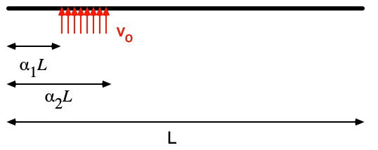
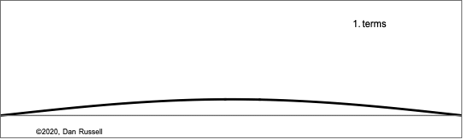

When a player presses a piano key, a felt-covered hammer is launched toward the string. This action — fast, precise, and beautifully mechanical — produces the piano's sound. The hammer, made of compressed wool felt, behaves like a nonlinear spring during the strike.
Researchers have studied this complex interaction between hammer and string using theory, experiments, and computer simulations. On this page, we take a simplified but powerful approach using the Fourier Series and initial conditions to explain the physics of the struck string.
Struck vs. Plucked Strings: Boundary and Initial Conditions
The problem of the struck string is rather similar to that of the Plucked String, insofar
as there are two types of conditions which must be considered. The Boundary Conditions (i.e. the displacement, velocity, and force values at the string ends) determine
the possible permitted mode shapes with which the string may vibrate at one of its natural frequencies. The Initial Conditions (the initial displacement and velocity
of the entire string at time
determine which of the possible allowed modes actually contribute to the resulting motion, and with what amplitudes.
For a string fixed at both ends, the boundary conditions at both ends require that the displacement
of the string should always equal zero. This results in mode shapes where
the transverse displacement of the string at any location on the string has been a function of a sine function:
where n is an integer and L is the length of the string.
Animation at right shows the first four allowed mode shapes for a fixed-fixed string. The number
of "humps" or antinodes is n. In setting the boundary conditions, the complete equation
for the transverse string displacement, as a function of time and position along the string length, is:
where ωₙ is the natural frequency of the nth mode, and the coefficients Aₙ
and Bₙ are determined from the initial displacement and velocity of the string. The string
has a linear density ρL [kg/m] and is stretched to tension T; transverse waves
travel along the string with a speed .
The natural frequencies of the permitted mode shapes vary with the string length and speed of the wave:
The natural frequencies will be higher if the string is shorter, or if the tension is higher,
or if the density is lower. The natural (or permitted) frequencies are integer multiples of the fundamental
(n = 1) frequency.
Initial Conditions for the Struck String
The actual interaction between the piano hammer and string is a complex one, but we can get a useful approximation by assuming the string starts at rest, and a short segment is given an initial velocity. The Fourier Coefficients \( A_n \) and \( B_n \) describe how different vibrational modes contribute to the motion. They are derived from the string’s initial displacement \( y(x,0) \) and velocity \( u(x,0) \):
Since the struck string is initially at rest at equilibrium, all of the \( A_n \) terms are zero. The \( B_n \) coefficients depend on the velocity profile imparted by the hammer.

As a first approximation, let’s assume a uniform velocity \( v_0 \) is applied between \( \alpha_1 L \) and \( \alpha_2 L \), and zero elsewhere. This leads to:
The plots above show how a Fourier sum of a few sine waves can already model string behavior right after the hammer strike. A more realistic model uses a half-sine-shaped initial velocity. Though analytically harder to solve, it produces sharper pulses.

It’s remarkable how a sum of sine waves with the right amplitude and frequency can reconstruct such rich physical behavior. This is the core of how musical acoustics connects mathematics, physics, and sound.
Striking vs. Plucking
In plucked strings (like a guitar), the string starts with an initial displacement but zero velocity. In contrast, a struck string begins with an initial velocity and zero displacement.
Mode Shapes and Harmonic Content
Below is a diagram of the first few standing wave modes (n = 1, 2, 3...) of a vibrating string. These combine linearly to form the total vibration.
In a real piano, the hammer doesn’t strike exactly in the middle — typically around 1/7 of the string length. This avoids exciting only odd harmonics (as a center strike would).
Time-Domain Vibration
Here's a simulation of a waveform built from the first six harmonics of A2, assuming a struck-string distribution:
Waveform built from A2 + its first harmonics (struck configuration).
Spectrum
The frequency domain view shows distinct peaks at the fundamental and overtones. All harmonics are present and gradually decrease in amplitude.
Spectrum of a struck A2 string: fundamental + overtones.
Conclusion
The physics of struck strings shows how energy delivery changes everything. Unlike bowed or plucked instruments, the piano's hammer activates a unique blend of harmonics, giving it its distinctive sound. By modeling the strike with a velocity function and solving the Fourier series, we can predict the sound — or even design it.